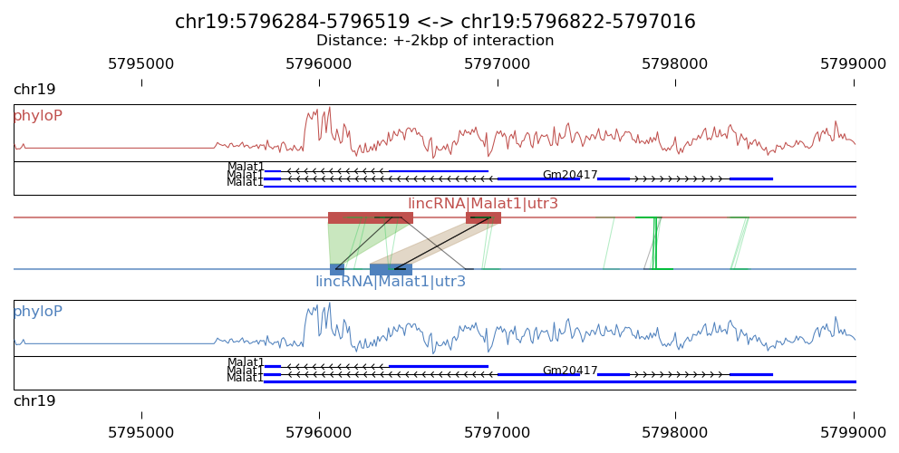
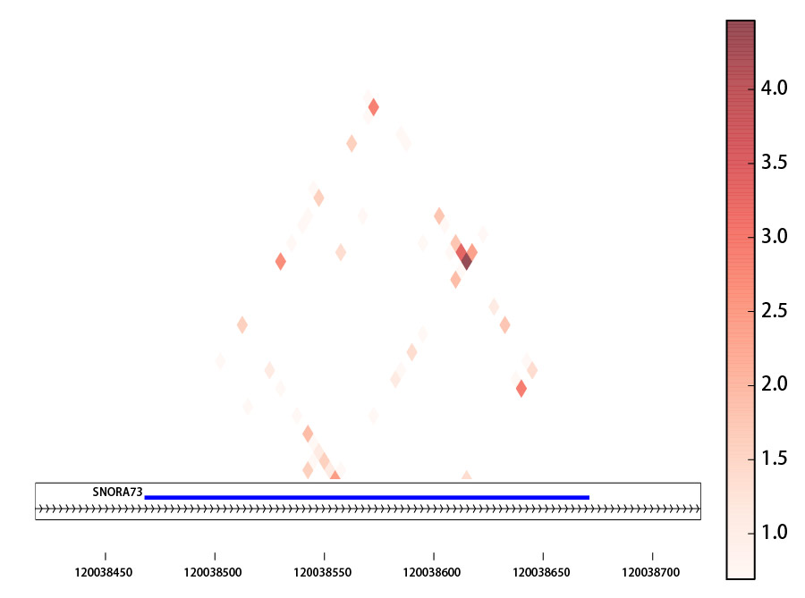

Visualization of local RNA-RNA interactions
Prerequirement
This program require python modules: xplib, matplotlib, numpy, bx-python
Run the program to generate visualization
The script “Plot_interaction.py” will be used for this purpose,
usage: Plot_interaction.py [-h] [-n N] [-s START [START ...]] [-d DISTANCE]
[-g GENEBED] [-w PHYLOP_WIG] [-p PAIR_DIST] [-S]
[-o OUTPUT]
interaction linkedPair
plot linked pairs around a given interaction. information of linked pairs are
stored in file '*_fragment_paired_align.txt'
positional arguments:
interaction Interaction file from output of
'Select_strongInteraction_pp.py'
linkedPair file for information of linked pairs, which is output
of 'Stitch-seq_Aligner.py'
optional arguments:
-h, --help show this help message and exit
-n N Choose region to plot, it can be a number (around n-th
interaction in the interaction file). This is mutually
exclusive with '-r' option
-r R [R ...] Choose region to plot, give two interaction regions
with format 'chr:start-end', this is mutually
exclusive with '-n' option
-s START [START ...], --start START [START ...]
start column number of the second region in
interaction file and linkedPair file, default=(7,8)
-d DISTANCE, --distance DISTANCE
the plus-minus distance (unit: kbp) flanking the
interaction regions to be plotted, default=10
-g GENEBED, --genebed GENEBED
the genebed file from Ensembl, default:
../Data/Ensembl_mm9.genebed
-w PHYLOP_WIG, --phyloP_wig PHYLOP_WIG
the bigWig file for phyloP scores,defualt:
mouse.phyloP30way.bw
-p PAIR_DIST, --pair_dist PAIR_DIST
two interacted parts within this distance are
considered as self-ligated and they are marked or
eliminated (see option -s for slim mode), default:
200bp
-S, --Slim set slim mode to eliminate self ligated interactions
-o OUTPUT, --output OUTPUT
output plot file, can be format of emf, eps, pdf, png,
ps, raw, rgba, svg, svgz
Note
linkedPair file is the output *_fragment_paired_align.txt from Step5:Stitch-seq_Aligner.py of the pipeline; Interaction txt file is the output of Step6:Select_strongInteraction_pp.py.
Example of result graph
Example code:
python Plot_interaction.py
ACCT_interaction_clusters_rmrRNA.txt \
ACCT_fragment_paired_align_rmRNA_sort.txt.gz \
-n 2412 \
-d 5 \
-o local_interaction.pdf
Result figure:
Explanation:
- The blue blocks are clusters generated in R1 . And the red blocks are clusters generated in R2 .
- the semi-transparent polygons connecting clusters in R1 and R2 pools indicate different strong interactions between clusters.
- The lines connecting to regions are evidence of linkedPairs, where green lines are the ones with distance between two ends less than what specified in option '-p'. This implies self ligation. All others are colored black
Visualization of intra-RNA interactions by heatmap
Prerequirement
This program require python modules: xplib, matplotlib, numpy
Run the program to generate heatmap for interactions within RNA molecule
This program could generate an heatmap to show interactions between different regions within an RNA molecule which are spatially proximate to each other. We use the script “Plot_interaction_heatmap.py”
usage: Plot_interaction_heatmap.py [-h] [-n NAME] [-r R]
[-s START [START ...]] [-g GENEBED]
[-p PAIR_DIST] [-S] [-t STEP] [-I]
[-o OUTPUT]
interaction linkedPair
plot interactions using a heatmap. information of linked pairs are stored in
file '*_fragment_paired_align.txt'
positional arguments:
interaction Interaction file from output of
'Select_strongInteraction_pp.py'
linkedPair file for information of linked pairs, which is output
of 'Stitch-seq_Aligner.py'
optional arguments:
-h, --help show this help message and exit
-n NAME, --name NAME give a gene name and plot the interaction heatmap new
the gene region, exclusive with '-r' option
-r R Choose region to plot, give region with format 'chr
:start-end', exclusive with '-n' option
-s START [START ...], --start START [START ...]
start column number of the second region in
interaction file and linkedPair file, default=(7,9)
-g GENEBED, --genebed GENEBED
the genebed file from Ensembl, default:
Ensembl_mm9.genebed
-p PAIR_DIST, --pair_dist PAIR_DIST
two interacted parts within this distance are
considered as self-ligated and they are marked or
eliminated (see option -s for slim mode), default:
1000bp
-S, --Slim set slim mode to eliminate self ligated interactions
-t STEP, --step STEP step or resolution or unit size of the heatmap,
default=10bp
-I, --SI Specify to add strong interaction in the
figure,default: False
-o OUTPUT, --output OUTPUT
output plot file, can be format of emf, eps, pdf, png,
ps, raw, rgba, svg, svgz
Require: xplib, matplotlib, numpy
Note
linkedPair file is the output *_fragment_paired_align.txt from Step5:Stitch-seq_Aligner.py of the pipeline; Interaction txt file is the output of Step6:Select_strongInteraction_pp.py. Users can use two different ways to give the region to be plotted. One is directly use the ‘-r’ option to specify the region, another is to give a gene name and the script can find a larger region covering the gene region.
Example of result graph
Example code:
python Plot_interaction_heatmap.py
ACCT_GGCG_interaction_clusters.txt \
ACCT_GGCG_fragment_paired_align_rmRNA_sort.txt.gz \
-r chr9:120038418-120038722 \
-t 5 \
-s 7 9 \
-g ../Data/Ensembl_mm9.genebed.gz \
-o Snora73_intra_interaction.pdf
Result figure:
Explanation:
The heatmap is basd on the log(count+1) of mapped linkage pairs across two windows with size [step]bp
Visualization of global RNA-RNA interactome
Prerequirement
This program is powered by RCircos [http://cran.r-project.org/web/packages/RCircos/index.html].
Required R packages (our program will check for the presence of these packages and install/load them automatically if not present):
- argparse, RCircos, biovizBase, rtracklayer
The program also require a python script “bam2tab.py” (already in /bin/ folder) to call coverage from BAM2X [https://github.com/nimezhu/bam2x/blob/master/scripts/bed2tab.py]
Run the program to generate visualization
We will use the script “Plot_Circos.R” for this purpose.
usage: Plot_Circos.R [-h] [-g GENOME] [-b BIN] [-o OUTPUT]
interaction part1 part2
positional arguments:
interaction the interaction file,[required]
part1 aligned BAM file for part1,[required]
part2 aligned BAM file for part2,[required]
optional arguments:
-h, --help show this help message and exit
-g GENOME, --genome GENOME
genome information, choice: mm9/mm10/hg19 et.al.,
[default: mm9]
-b BIN, --bin BIN window size for the bins for coverage calling, [default: 100000.0]
-o OUTPUT, --output OUTPUT
output pdf file name, [default: Interactome_view.pdf]
Note
part1, part2 BAM files are the ones generated from Step5:Stitch-seq_Aligner.py of the pipeline; Interaction txt file is the output of Step6:Select_strongInteraction_pp.py.
Example of result graph
Example code:
Rscript Plot_Circos.R GGCG_interaction_clusters.txt
sort_Paired1_fragment_GGCG.bam sort_Paired2_fragment_GGCG.bam
-b 100000 -o Interactome_GGCG.pdf
Result figure:

Explanation:
- The purple track right inside chromatin cytoband ideogram is the coverage of part1 (the first genomic regions connected with linker sequences) of this sample.
- The light blue track next is the coverage of part2 (the other genomic regions connected with linkers).
- The inner links are the strong interactions after removing rRNA. colors represent different types of interactions and the transparency represents the confidence of the interaction (the ones with lower p-values are stronger)
Visualization of interaction types enrichment
Prerequirement
Required R packages (our program will check for the presence of these packages and install/load them automatically if not present):
- “argparse”,”ggplot2”,”scales”
Run the program to generate visualization for enrichment of different types of interactions
We will use the script “Interaction_type_enrichment.R” for this purpose.
usage: ../../bin/Interaction_type_enrichment.R [-h] [-n NUM [NUM ...]]
[-o OUTPUT]
interaction
plot the statistical significance for enrichment of different interaction
types
positional arguments:
interaction the strong interaction file,[required]
optional arguments:
-h, --help show this help message and exit
-n NUM [NUM ...], --num NUM [NUM ...]
Column numbers for the type name in two part,[default:
[4, 11]]
-o OUTPUT, --output OUTPUT
output pdf figure file, [default:
interaction_type.pdf]
Note
Interaction txt file is the output of Step6:Select_strongInteraction_pp.py.
Example of result graph
Example code:
Rscript Interaction_type_enrichment.R ACCT_interaction_clusters.txt
-n 4 11 -o ACCT_interaction_type.pdf
Result figure:

Explanation:
For each interaction types (Type1_in_Part1<->Type2_in_Part2), we calculated the number of Type1 in Part1 from all intereactions n1 and number of Type2 in Part2 from all interactions n2. Then we calculate the number of interactions with this type: Type1_in_Part1<->Type2_in_Part2 n12. The p-value for each interacction type is calculated based on the hypergeometric distribution with R command: phyper(n12, n1, total_n - n1, n2, lower.tail=F). Here total_n is the total number of strong interactions. The color for each cell (each interaction type) are coded based on the value of “-ln(p-value)”.